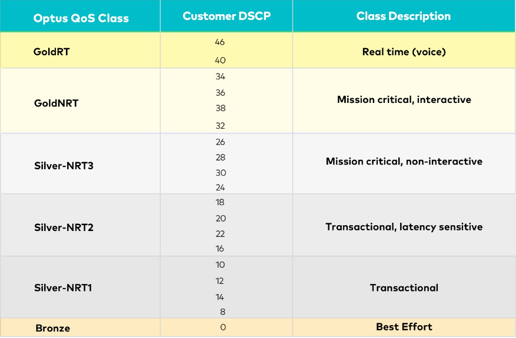

<!-- <ion-header>
	<ion-navbar>
		<ion-title class="title">DSCP</ion-title>
	</ion-navbar>
</ion-header> -->
<!-- <ion-header>
		<ion-toolbar>
		 
		  
			 
		</ion-toolbar>
	  </ion-header>

<ion-content padding>

	<ion-item>
			<span>Please ensure that you mark your traffic with DSCP as per below,<br/> Any DSCP values that are not listed in the table will be treated as Silver-nrt</span>
	</ion-item>
	
	
</ion-content> -->
<!-- <ion-header>
		<ion-toolbar>
		 
		  
			 
		</ion-toolbar>
	  </ion-header> -->

<ion-content padding>
	
	<ion-item>
			<span>Please ensure that you mark your traffic with DSCP as per below. Any DSCP values that <br/> are not listed in the table will be treated as Silver-NRT1</span>
			
		</ion-item>
	
	
</ion-content>